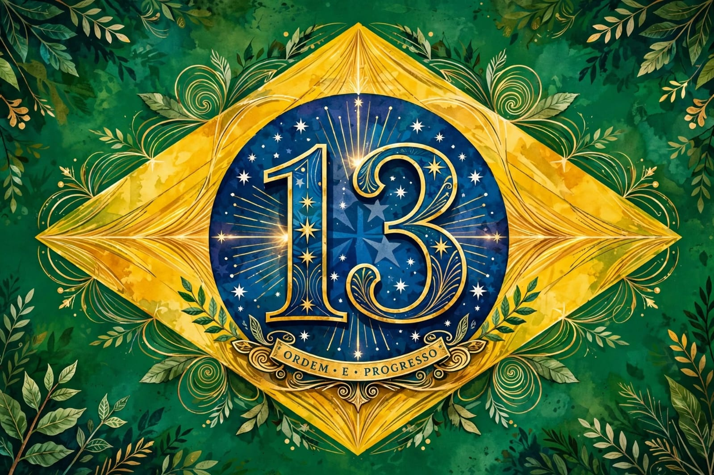

Brasil · 13
Ordem e Progresso
Uma leitura vibrante dos símbolos brasileiros, em verde, amarelo e azul.
Acervo visual brasileiro
Uma galeria aberta de ilustrações de apoio ao governo Lula e ao debate sobre os caminhos do Brasil.

Uma leitura vibrante dos símbolos brasileiros, em verde, amarelo e azul.